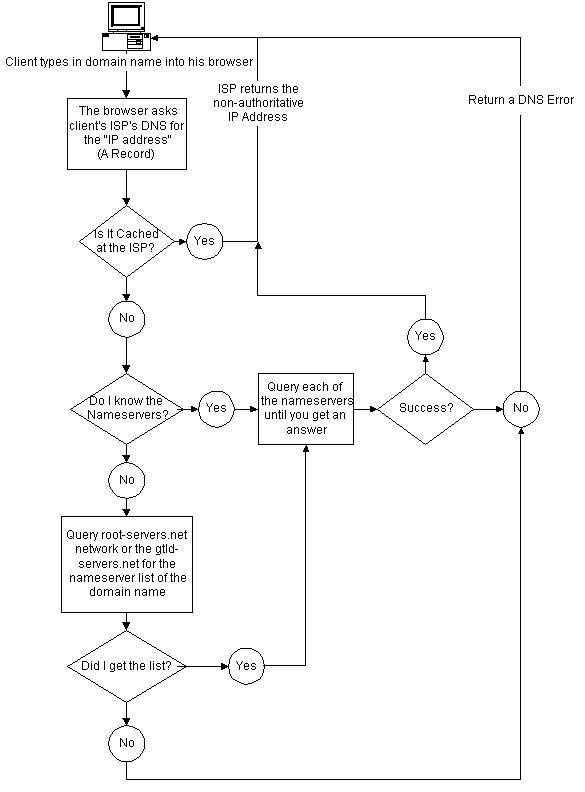

The Revoluti0n
| last article | table of contents | next article |
|---|
| last article | table of contents | next article |
|---|
IP addressing and DNS by assassin007
The term IP stands for Internet Protocol. On the Internet, systems are connected to networks, which are further divided into sub-networks. Every system on such network will have a unique IP address. An IP address is composed of four segments known as octets. Each octet is an 8-bit field and can have a value ranging from 0 to 255. A typical IP address looks something like 203.197.254.249 The IP addresses are divided into five classes, which are Class A through Class E. Depending on the size of the network, different types of classes are used for addressing machines on the network. Class A networks are the largest and can hold up to 16 million systems on 127 networks. In this class, the first octet is the network prefix number and the other three octets represent the host number. A Class A network address block looks like the following: Class A: 1.XXX.XXX.XXX to 126.XXX.XXX.XXX (NNN.HHH.HHH.HHH) Class A networks can use up to three octets for addressing machines. These are used for very large organizations and collections of related networks. Also, many educational institutions are grouped under a Class A address. Class B networks are next to Class A networks. The Class B networks use first two octets for network number and next two octets for host number. A Class B network can address up to 65000 hosts on each of 16000 networks. A Class B network address block looks like the following: Class B: 128.0.XXX.XXX to 191.255.XXX.XXX (NNN.NNN.HHH.HHH) In a Class B network only two octets can be used for addressing machines. So, from a single block of Class A addresses, 255 Class B networks can be made. Class C networks comes the next, normally used by many smaller networks and your local ISP may also be using this Class of addressing. A Class C address block can hold up to 255 machines on each of two million networks. Class C: 192.0.0.XXX to 223.255.255.XXX (NNN.NNN.NNN.HHH) Class C networks can use only a single octet for addressing machines. So we can make 255 Class C networks out of a single block of Class B addresses. Class D addresses are reserved for IP Multicasting, and Class E addresses are reserved for "experimental purposes". IP addresses are designed in such a way to create small networks out of larger networks. The process of creating smaller sub-networks from a single larger network is called subnetting. You might have already noticed that IP addresses starting 127 doesn't fall either into Class A or Class B. Well 127.X.X.X is reserved for special purposes. 127.0.0.1 represents the IP address of the local host i.e., your own system. IP addresses are classified into static and dynamic IP addresses. If you are connecting to the internet through dial-up networking, every time you dial your ISP for a connection your system will be dynamically assigned an IP address. Every time you dial a connection you will be dynamically given an IP address. But if you are connected through a DSL connection or have a permanent LAN connection your IP address will not change. This type of IP address is called static IP address. Remember static IP addresses are more prone to attacks. So if you have a static IP address don't forget to install a firewall and an Anti-virus software. To find your system's IP address click Run and then type command. You will see the DOS prompt now. Type IPconfig to find out your IP address. Subnetting: Subnetting is the process of deriving smaller networks from larger networks. Subnetting is done for various reasons, like to save address space and to increase the security of the network. In this topic we will be coming across the term "subnet mask". Well the subnet mask is used to split-up the existing network IP address into "sub-networks" or "subnets". The masks used by different classes of IP are: Class A: 255.0.0.0 Class B: 255.255.0.0 Class C: 255.255.255.0 To understand the subnetting better you must have the knowledge of binary number form. Let's consider the IP address 192.168.0.1. In binary octet form it looks like 11000000.10101000.00000000.00000001. 192 (decimal) = 11000000 (binary) 168 (decimal) = 10101000 (binary) 0 (decimal) = 00000000(binary) 1 (decimal) = 00000001 (binary) The subnet mask of an IP address is what tells the computer or router which part of your IP address belongs to your network and which part belongs to the hosts. Thus, a subnet mask of 255.255.255.0 tells your computer that the first three octets of your IP address belong to the network, and all of your hosts will be referenced with the last octet. This gives us a standard subnet mask of 255.255.255.0, with a possibility of 254 hosts in our network. You are required to have a base network address and a broadcast address for every subnet. Normally for the base network address the last octet will be 0 and for the broadcast address the last octet will be 255. The first step in implementing a subnet is determining the number of hosts in a mask. Say if you want to have 20 hosts in a subnet then you should have a minimum of 22 hosts including the base network address and the broadcast address. Now consider the last octet in the IP address. 0 0 0 0 0 0 0 0 128 64 32 16 8 4 2 1 If we want at least 22 hosts on each of our subnets, we are going to need the last five bits in our octet quad. This will give us a total available of 16+8+4+2+1 or 31 possible hosts including the network address and broadcast address. This leaves the first three bits of the octet for network addressing. This makes our subnet mask for the entire network 255.255.255.224. How did I come up with this? The positional notation values for the first three bits of our final octet, when added together, equal 224. Network bits | Host bits 128 64 32| 16 8 4 2 1 Lets say we have an IP address of 203.197.254.0. For our first subnet, we have a subnet mask of 255.255.255.224. This gives us hosts from 230.197.254.1 to 30, with 203.197.254.0 as the network address and 203.197.254.31 as the broadcast address. Our next subnet would be 203.197.254.32 with the same 31 hosts, including broadcast and network. The subnet following that would have an IP range of 203.197.254.64-95. The next would be 203.197.254.96-127, then 128-159, then 160-191, 192-223 and, finally, 224-255. ANDing: It is very easy to know you network address if you know your IP address and the subnet mask. The two addresses are bitwise AND(ed) together will give you the network address. The following is the ANDing principle: 0+0=0 0+1=0 1+1=1 The following example shows you to find the network address: 11000000.10101000.00000000.00000001 (IP address 192.168.0.1 ) 11111111.11111111.11111111.11100000 (Subnet Mask 255.255.255.224) 11000000.10101000.00000000.00000000 (Network address 192.168.0.0) Anonymous surfing: You might have already noticed that some websites log your IP address while browsing through that site. They can monitor your interests and spy on you through that address. You may not believe that just having your IP address and using some pre-packaged tools a script-kiddie can totally crash your system. This is where anonymous proxy servers come in. Anonymous proxy servers hide your IP address and they don't even let other know that you're a browsing from a proxy server. To start browsing through a proxy server you must have a proxy server address and the port number. You can find the list of latest proxies at http://www.proxymania.com. Note down a proxy server address and the respective port number you wish to browse from. Now you should configure your browser to start anonymous surfing. In Internet Explorer: Go to Control Panel->Internet Settings and click the connections tab. Click the LAN Settings... button. In the popup box, check the option Use a proxy server for your LAN. Now enter the proxy server address and port number in the Address and Port fields respectively. In Netscape 4++: Go to Edit->Preferences->Advanced->Proxies and configure the proxy address and port number there. Now you will be surfing anonymously in the net. But note that, these proxy servers addresses should be changed and updated from time to time to improve your browsing speeds. Domain Name System (DNS): IP addresses help you to connect to other systems on the network. But it is very hard to remember the IP addresses of different systems that you want to connect to. So, the concept of domain names was introduced. Just you need to remember the user-friendly names such as yahoo.com known as domain names instead of weird IP addresses like 241.56.25.155 and the DNS will do the rest of work. The Domain Name System (DNS) is a distributed Internet directory service. DNS is used mostly to translate between domain names and IP addresses, and to control Internet email delivery. Most Internet services rely on DNS to work, and if DNS fails, web sites cannot be located and email delivery stalls. The Domain Name System (DNS) is software that runs on Port 53. Read the following terms before you study the working of Domain Name System. Client- User's system running the web browser ISP's DNS server - The DNS server run by your ISP Root server - INTERNIC's root server Destination DNS - The destination domain's DNS server When the client types a web address in the browser windows, the browser sends a DNS query to the ISP's DNS server. The DNS server looks in its cache to find the IP address for the web address. If it finds the IP address for that, the DNS server replies the non-authoritative IP address to the client back. If the ISP's DNS server cannot find the IP address in its cache it will send the request to "Name servers". If IP address is found there that will be sent to the client else the request will be forwarded to the "Root-Servers". The Root servers search the records for the web address, if found it sends back the client with the address. The "Name servers" and "ISPs DNS server" are updated with the new IP address. If the DNS server cannot find the IP address it will reply the client with DNS Error message. The entire process can be represented in the figure below.

Well that's it for now. See you again in my next update. Till then bye and take care. Sincerely yours assassin007 http://hrvg.tk